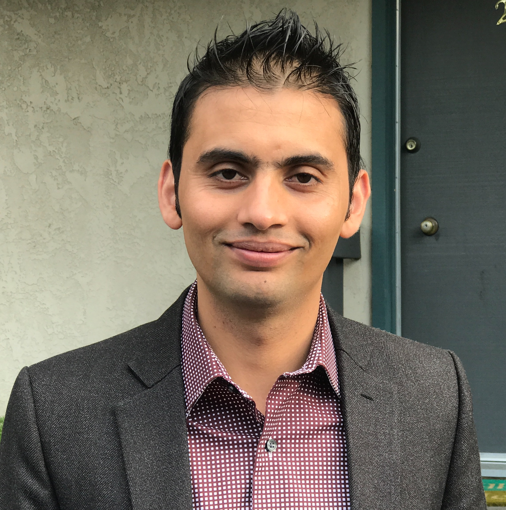

About Me
My name is Tej Poudel. I am a coding bootcamp student at University of Berkely Extension San Francisco Califoinia. I am enjoying taking class in UCB Extension. I have bachelors degree in Arts information and technology from Tribhuvan University Nepal.
I work as an Atlassian(Jira) developer at Airbnb a reputed internet company of US. I am learning many different computer languages. I can already code in JavaScript, Ruby on Rails, HTML, CSS, Bootstrap, Python, Java and Node Js. I am using Groovy Script for my Job at Airbnb. I am still learning and brushing up my skills for web and software development. I love coding and learning new technology.
I want to change my job and be a successful computer programmer. I am planning to build a small startup and start business in the future. Only thing about me is I never get tired of coding. I hope UCB Extension will help me to reach my goal in this Information Technology Career and my interests.